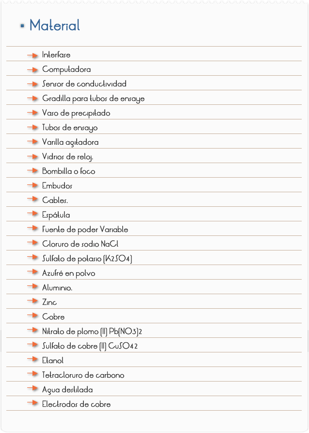
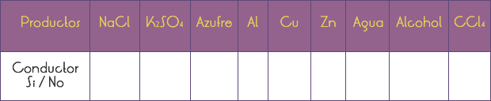
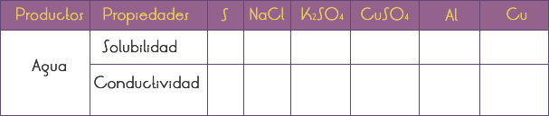
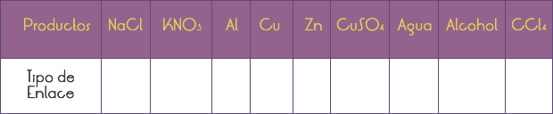

Introducción
Los átomos se combinan para formar los compuestos y moléculas. A las fuerzas que se atraen entre dos átomos se le llama enlace químico, en el cual intervienen los electrones de valencia. La mayoría de los enlaces son mixtos y se describen según sus características predominantes; uno de los tipos más común es el enlace iónico.
La formación de los enlaces se puede presentar entre átomos de igual o diferente electronegatividad. Se puede obtener una clasificación de los enlaces al establecer la diferencia de electronegatividad entre los elementos involucrados en el enlace.
Para encontrar la diferencia de electronegatividad entre dos elementos, se resta el menor valor del mayor. Cuando el enlace se presenta entre elementos de igual electronegatividad, la diferencia es cero y se da un enlace covalente puro. Estas moléculas son de carácter no polar; no hay formación de dipolos.
Los enlaces covalentes y los enlaces iónicos son casos extremos de valores de electronegatividad. Como regla general se tiene que, cuando la diferencia de electronegatividad entre elementos es mayor que 1 .7 el enlace es de carácter iónico. Todo enlace que se presenta entre átomos de diferentes elementos, necesariamente ha de tener algún carácter polar.
Los metales sólidos como el hierro, el oro, la plata, el potasio o cualquier otro metal, están formados en su totalidad por átomos del mismo tipo. El modelo de un sólido metálico se entiende como una formación tridimensional de iones positivos, que permanecen fijos siempre.
Objetivo
Comprobar el comportamiento de los compuestos de acuerdo al paso de la corriente eléctrica y su solubilidad en sus diferentes disolventes para identificar el tipo de enlace iónico, covalente o metálico.

1. Montar un circuito eléctrico sencillo
2. Comprobar la conductividad de los productos sólidos.
3. Se apoyan los electrodos sobre el sólido correspondiente y se observa si se enciende la bombilla.
4. Comprobar la conductividad de los productos líquidos.
5. Se colocan 10 ml del líquido correspondiente en el crisol y se introducen los electrodos (evitando que se toquen). Utilizar un crisol para el agua y el otro para el resto de los disolventes. Una vez comprobada la conductividad de cada compuesto verter dicho líquido en el vaso de precipitado.
CONDUCTIVIDAD

Comprobar la solubilidad de una sustancia.
1. Coloca en 6 tubos de ensayo una pequeña cantidad de los sólidos (NaCl, K2SO4, CuSO4, Al, Cu y S)
2. Añade unos 10 mL de agua en cada uno de ellos, observa la solubilidad de cada producto.
3. Utiliza los otros dos tubos de ensayo, para comprobar la solubilidad del S en alcohol y en CCl4.
Comprobar la conductividad de las disoluciones del paso anterior.
1. Realiza los procedimientos de Inicio, y conexión de la interfase (Software Excel)"
2. Inicia el Programa Excel para la adquisición de datos con el sensor de conductividad.
3. Determina el intervalo de tiempo para las diferentes mediciones de tiempo (0.2 a 0.5 segundos) por determinación.
4. Vierte el contenido del tubo de ensayo en el crisol y comprueba su conductividad.

Cuestionario
1.¿Es soluble el azufre en Alcohol? ¿Conduce la corriente eléctrica?
2.¿Es soluble el azufre en CCl4? ¿Conduce la corriente eléctrica?
3.A partir de la conductividad y solubilidad observada para cada compuesto, deduce el tipo de enlace que presentan las diferentes sustancias estudiadas.

4.¿Por qué los metales son tan buenos conductores?
5.¿Por qué los compuestos iónicos no conducen la corriente eléctrica en estado sólido y si la conducen cuando están disueltos?
Comentarios
Los compuestos iónicos son sólidos de alto punto de fusión, que se disuelven en disolventes polares como el agua y que fundidos o disueltos conducen la corriente eléctrica. En los compuestos covalentes existe una gran dispersión en cuanto a estado físico, desde sólidos con alto punto de fusión como el diamante, hasta gases como el amoniaco o el metano; generalmente son solubles en disolventes apolares como el benceno, hexano... y ni en estado fundido, ni disuelto conducen la corriente eléctrica. Las sustancias iónicas cuando se encuentran en disolución se disocian en iones (aniones con carga negativa y cationes con carga positiva), en cualquier caso, partículas cargadas y como tales susceptibles de conducir la corriente eléctrica. Las sustancias covalentes por el contrario cuando se disuelven no dan lugar a separación de cargas, por lo que no conducen la electricidad. Apoyándonos en su aspecto y estado físico, en su solubilidad y en la conductividad de corriente eléctrica, podríamos caracterizar a las sustancias iónicas y covalentes. Lo haremos fijándonos en su conductividad eléctrica.